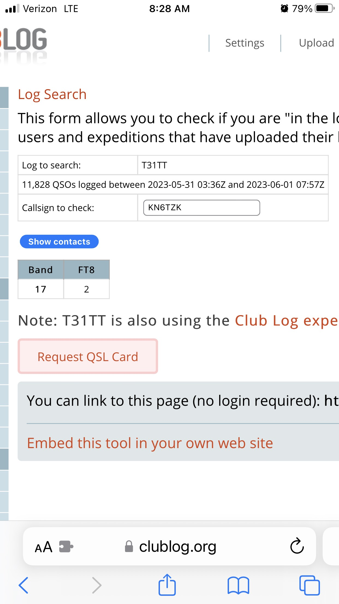

<!-- MHonArc v2.6.19+ -->
<!--X-Subject: Re: [NCDXC Chat] T31TT Central Kirabati now on 12m F/H in normal sub band (also 15m) -->
<!--X-From-R13: &#60;ovyyNerqsyngpng.pbz> -->
<!--X-Date: Thu, 01 Jun 2023 12:33:43 &#45;0500 -->
<!--X-Message-Id: 00ef01d994af$1be83250$53b896f0$@redflatcat.com -->
<!--X-Content-Type: multipart/related -->
<!--X-Reference: A96BEDED&#45;F039&#45;48CE&#45;BC0A&#45;9211BA283B42@gmail.com -->
<!--X-Reference: 18D9058A&#45;4DC8&#45;4B75&#45;BE05&#45;C12E42A8568A@gmail.com -->
<!--X-Reference: CAFtCS3n===L0gE+RYGcMPQrDGwthCys_hzNeddaSsgAASaR4&#45;g@mail.gmail.com -->
<!--X-Reference: CAFtCS3n+r++8cFV2mkBcDuxD1_S=xQd9+LuoyH&#45;13VhXDQhm7Q@mail.gmail.com -->
<!--X-Derived: jpgd7IppUN5bT.jpg -->
<!--X-Head-End-->
<!DOCTYPE HTML PUBLIC "-//W3C//DTD HTML 4.01 Transitional//EN"
        "http://www.w3.org/TR/html4/loose.dtd">
<html>
<head>
<title>Re: [NCDXC Chat] T31TT Central Kirabati now on 12m F/H in normal sub band (also 15m)</title>
<link rev="made" href="mailto:bill@redflatcat.com">
</head>
<body>
<!--X-Body-Begin-->
<!--X-User-Header-->
<!--X-User-Header-End-->
<!--X-TopPNI-->
<hr>
[<a href="msg29613.html">Date Prev</a>][<a href="msg29615.html">Date Next</a>][<a href="msg29607.html">Thread Prev</a>][<a href="msg29596.html">Thread Next</a>][<a href="maillist.html#29614">Date Index</a>][<a href="threads.html#29614">Thread Index</a>]
<!--X-TopPNI-End-->
<!--X-MsgBody-->
<!--X-Subject-Header-Begin-->
<h1>Re: [NCDXC Chat] T31TT Central Kirabati now on 12m F/H in normal sub band (also 15m)</h1>
<hr>
<!--X-Subject-Header-End-->
<!--X-Head-of-Message-->
<ul>
<li><em>To</em>: &quot;'Will Shattuck'&quot; &lt;<a href="mailto:willshattuck%40gmail.com">willshattuck@gmail.com</a>&gt;, &quot;'Wendy Baum'&quot; &lt;<a href="mailto:wendybaum56%40gmail.com">wendybaum56@gmail.com</a>&gt;</li>
<li><em>Subject</em>: Re: [NCDXC Chat] T31TT Central Kirabati now on 12m F/H in normal sub band (also 15m)</li>
<li><em>From</em>: &lt;<a href="mailto:bill%40redflatcat.com">bill@redflatcat.com</a>&gt;</li>
<li><em>Date</em>: Thu, 1 Jun 2023 10:32:58 -0700</li>
<li><em>Cc</em>: &quot;'NCDXC Discussion List'&quot; &lt;<a href="mailto:chat%40ncdxc.org">chat@ncdxc.org</a>&gt;</li>
<li><em>In-reply-to</em>: &lt;CAFtCS3n+r++8cFV2mkBcDuxD1_S=xQd9+LuoyH-13VhXDQhm7Q@mail.gmail.com&gt;</li>
<li><em>List-archive</em>: &lt;<a href="http://mail.ncdxc.org/mailman/private/chat_ncdxc.org/">http://mail.ncdxc.org/mailman/private/chat_ncdxc.org/</a>&gt;</li>
<li><em>List-help</em>: &lt;<a href="mailto:chat-request@ncdxc.org?subject=help">mailto:chat-request@ncdxc.org?subject=help</a>&gt;</li>
<li><em>List-id</em>: NCDXC Discussion List &lt;chat.ncdxc.org&gt;</li>
<li><em>List-post</em>: &lt;<a href="mailto:chat@ncdxc.org">mailto:chat@ncdxc.org</a>&gt;</li>
<li><em>List-subscribe</em>: &lt;<a href="http://mail.ncdxc.org/mailman/listinfo/chat_ncdxc.org">http://mail.ncdxc.org/mailman/listinfo/chat_ncdxc.org</a>&gt;, &lt;<a href="mailto:chat-request@ncdxc.org?subject=subscribe">mailto:chat-request@ncdxc.org?subject=subscribe</a>&gt;</li>
<li><em>List-unsubscribe</em>: &lt;<a href="http://mail.ncdxc.org/mailman/options/chat_ncdxc.org">http://mail.ncdxc.org/mailman/options/chat_ncdxc.org</a>&gt;, &lt;<a href="mailto:chat-request@ncdxc.org?subject=unsubscribe">mailto:chat-request@ncdxc.org?subject=unsubscribe</a>&gt;</li>
<li><em>References</em>: &lt;<a href="msg29597.html">A96BEDED-F039-48CE-BC0A-9211BA283B42@gmail.com</a>&gt; &lt;<a href="msg29598.html">18D9058A-4DC8-4B75-BE05-C12E42A8568A@gmail.com</a>&gt; &lt;CAFtCS3n===L0gE+RYGcMPQrDGwthCys_hzNeddaSsgAASaR4-g@mail.gmail.com&gt; &lt;CAFtCS3n+r++8cFV2mkBcDuxD1_S=xQd9+LuoyH-13VhXDQhm7Q@mail.gmail.com&gt;</li>
<li><em>Thread-index</em>: AQIiA7ZUX8a+iff0mxyshMCrK3tfewH3WyBhAVqMuiwCOI8/Aa65AiwA</li>
</ul>
<!--X-Head-of-Message-End-->
<!--X-Head-Body-Sep-Begin-->
<hr>
<!--X-Head-Body-Sep-End-->
<!--X-Body-of-Message-->
<table width="100%"><tr><td style="a:link { color: blue } a:visited { color: purple } "><div class=WordSection1><p class=MsoNormal>My two QSOs are also in their log. Even the one where he just sent +19 but no roger of any kind. Just that one line of decode &#x2013; makes you wonder if anyone is in front of the computer&#x2026;<o:p></o:p></p><p class=MsoNormal>Bill<o:p></o:p></p><p class=MsoNormal>WB6JJJ<o:p></o:p></p><p class=MsoNormal><o:p>&nbsp;</o:p></p><div style='border:none;border-top:solid #E1E1E1 1.0pt;padding:3.0pt 0in 0in 0in'><p class=MsoNormal><b>From:</b> Will Shattuck &lt;willshattuck@gmail.com&gt; <br><b>Sent:</b> Thursday, June 1, 2023 8:30 AM<br><b>To:</b> Wendy Baum &lt;wendybaum56@gmail.com&gt;<br><b>Cc:</b> NCDXC Discussion List &lt;chat@ncdxc.org&gt;; bill@redflatcat.com<br><b>Subject:</b> Re: [NCDXC Chat] T31TT Central Kirabati now on 12m F/H in normal sub band (also 15m)<o:p></o:p></p></div><p class=MsoNormal><o:p>&nbsp;</o:p></p><div><p class=MsoNormal>Looks like I&#x2019;m in the log<o:p></o:p></p></div><div><p class=MsoNormal><o:p>&nbsp;</o:p></p></div><div><div><p class=MsoNormal><o:p></o:p></p></div><p class=MsoNormal><o:p>&nbsp;</o:p></p></div><div><p class=MsoNormal><o:p>&nbsp;</o:p></p><div><div><p class=MsoNormal>On Wed, May 31, 2023 at 6:49 PM Will Shattuck &lt;<a rel="nofollow" href="mailto:willshattuck@gmail.com">willshattuck@gmail.com</a>&gt; wrote:<o:p></o:p></p></div><blockquote style='border:none;border-left:solid #CCCCCC 1.0pt;padding:0in 0in 0in 6.0pt;margin-left:4.8pt;margin-right:0in'><div><p class=MsoNormal>Thanks to everyone who responded.&nbsp; I then watched how the OP worked the other stations.&nbsp; They worked them just like I did.&nbsp; I called&nbsp;they responded then they moved on.&nbsp; I'm pretty sure I&quot;m in the log.&nbsp; Like others said I'll check clublog.<o:p></o:p></p><div><p class=MsoNormal><o:p>&nbsp;</o:p></p></div><div><p class=MsoNormal>73&nbsp;<o:p></o:p></p></div><div><p class=MsoNormal>Will<o:p></o:p></p></div></div><p class=MsoNormal><o:p>&nbsp;</o:p></p><div><div><p class=MsoNormal>On Wed, May 31, 2023 at 5:49&#x202F;PM Wendy Baum via Chat &lt;<a rel="nofollow" href="mailto:chat@ncdxc.org" target="_blank">chat@ncdxc.org</a>&gt; wrote:<o:p></o:p></p></div><blockquote style='border:none;border-left:solid #CCCCCC 1.0pt;padding:0in 0in 0in 6.0pt;margin-left:4.8pt;margin-right:0in'><div><p class=MsoNormal style='margin-bottom:12.0pt'>Yes, Will, you probably got him!&nbsp; Check ClubLog sometime tomorrow to confirm.<o:p></o:p></p><div><p class=MsoNormal>Sent from my iPhone please excuse any typos and/or grammatical errors.<o:p></o:p></p></div><div><p class=MsoNormal><br><br><o:p></o:p></p><blockquote style='margin-top:5.0pt;margin-bottom:5.0pt'><p class=MsoNormal style='margin-bottom:12.0pt'>On May 31, 2023, at 19:47, Wendy Baum &lt;<a rel="nofollow" href="mailto:wendybaum56@gmail.com" target="_blank">wendybaum56@gmail.com</a>&gt; wrote:<o:p></o:p></p></blockquote></div><blockquote style='margin-top:5.0pt;margin-bottom:5.0pt'><div><p class=MsoNormal>&#xFEFF;Yes, the Rebels do that.&nbsp; Follow the WFWL rule.&nbsp; Probably 50% or more of my QSOs with them never received a 73 but then I find I&#x2019;m in their log.&nbsp; Once you realize that&#x2019;s how some of their operators work, you know their game.<o:p></o:p></p><div><p class=MsoNormal><o:p>&nbsp;</o:p></p></div><div><p class=MsoNormal style='margin-bottom:12.0pt'>73, Wendy WF8R<o:p></o:p></p><div><p class=MsoNormal>Sent from my iPhone please excuse any typos and/or grammatical errors.<o:p></o:p></p></div><div><p class=MsoNormal><br><br><o:p></o:p></p><blockquote style='margin-top:5.0pt;margin-bottom:5.0pt'><p class=MsoNormal style='margin-bottom:12.0pt'>On May 31, 2023, at 19:26, <a rel="nofollow" href="mailto:bill@redflatcat.com" target="_blank">bill@redflatcat.com</a> wrote:<o:p></o:p></p></blockquote></div><blockquote style='margin-top:5.0pt;margin-bottom:5.0pt'><div><p class=MsoNormal>&#xFEFF;<o:p></o:p></p><div><p class=MsoNormal style='mso-margin-top-alt:auto;mso-margin-bottom-alt:auto'>Thanks Wendy,<o:p></o:p></p><p class=MsoNormal style='mso-margin-top-alt:auto;mso-margin-bottom-alt:auto'>I noticed that they did not send an RR73 on 10 Meters but did send an RR73 on 15 Meters&#x2026;<o:p></o:p></p><p class=MsoNormal style='mso-margin-top-alt:auto;mso-margin-bottom-alt:auto'>&nbsp;<o:p></o:p></p><p class=MsoNormal style='mso-margin-top-alt:auto;mso-margin-bottom-alt:auto'>73,<o:p></o:p></p><p class=MsoNormal style='mso-margin-top-alt:auto;mso-margin-bottom-alt:auto'>Bill<o:p></o:p></p><p class=MsoNormal style='mso-margin-top-alt:auto;mso-margin-bottom-alt:auto'>WB6JJJ<o:p></o:p></p><p class=MsoNormal style='mso-margin-top-alt:auto;mso-margin-bottom-alt:auto'>&nbsp;<o:p></o:p></p><div style='border:none;border-top:solid #E1E1E1 1.0pt;padding:3.0pt 0in 0in 0in'><p class=MsoNormal style='mso-margin-top-alt:auto;mso-margin-bottom-alt:auto'><b>From:</b> Chat &lt;<a rel="nofollow" href="mailto:chat-bounces@ncdxc.org" target="_blank">chat-bounces@ncdxc.org</a>&gt; <b>On Behalf Of </b>Wendy Baum via Chat<br><b>Sent:</b> Wednesday, May 31, 2023 5:18 PM<br><b>To:</b> Richard Jackson &lt;<a rel="nofollow" href="mailto:rjackson@cinesys.com" target="_blank">rjackson@cinesys.com</a>&gt;<br><b>Cc:</b> NCDXC Discussion List &lt;<a rel="nofollow" href="mailto:chat@ncdxc.org" target="_blank">chat@ncdxc.org</a>&gt;<br><b>Subject:</b> Re: [NCDXC Chat] T31TT Central Kirabati now on 12m F/H in normal sub band (also 15m)<o:p></o:p></p></div><p class=MsoNormal style='mso-margin-top-alt:auto;mso-margin-bottom-alt:auto'>&nbsp;<o:p></o:p></p><div><p class=MsoNormal style='mso-margin-top-alt:auto;mso-margin-bottom-alt:auto'>Also on 10M 28.074 now - multiple streams 313, 343, ...<o:p></o:p></p><div><p class=MsoNormal style='mso-margin-top-alt:auto;mso-margin-bottom-alt:auto'>73, Wendy Wf8R<o:p></o:p></p></div></div><p class=MsoNormal style='mso-margin-top-alt:auto;mso-margin-bottom-alt:auto'>&nbsp;<o:p></o:p></p><div><div><p class=MsoNormal style='mso-margin-top-alt:auto;mso-margin-bottom-alt:auto'>On Wed, May 31, 2023 at 6:46&#x202F;PM Richard Jackson via Chat &lt;<a rel="nofollow" href="mailto:chat@ncdxc.org" target="_blank">chat@ncdxc.org</a>&gt; wrote:<o:p></o:p></p></div><blockquote style='border:none;border-left:solid #CCCCCC 1.0pt;padding:0in 0in 0in 6.0pt;margin-left:4.8pt;margin-top:5.0pt;margin-right:0in;margin-bottom:5.0pt'><div><p class=MsoNormal style='mso-margin-top-alt:auto;mso-margin-bottom-alt:auto'>Got him first call on 15m: 284 Hz, opposite time slot from 5Z4VJ.<o:p></o:p></p><div><p class=MsoNormal style='mso-margin-top-alt:auto;mso-margin-bottom-alt:auto'>&nbsp;<o:p></o:p></p></div><div><p class=MsoNormal style='mso-margin-top-alt:auto;mso-margin-bottom-alt:auto'>Might be a pirate - he gave me an RR73! &nbsp;;-)<o:p></o:p></p></div><div><p class=MsoNormal style='mso-margin-top-alt:auto;mso-margin-bottom-alt:auto'>&nbsp;<o:p></o:p></p></div><div><p class=MsoNormal style='mso-margin-top-alt:auto;mso-margin-bottom-alt:auto'>&nbsp; &nbsp;- Richard, NC6RJ<o:p></o:p></p></div><div><p class=MsoNormal style='mso-margin-top-alt:auto;mso-margin-bottom-alt:auto'>&nbsp;<o:p></o:p></p></div><div><p class=MsoNormal style='mso-margin-top-alt:auto;mso-margin-bottom-alt:auto'>&nbsp;<o:p></o:p></p><div><p class=MsoNormal style='mso-margin-top-alt:auto;margin-bottom:12.0pt'><o:p>&nbsp;</o:p></p><blockquote style='margin-top:5.0pt;margin-bottom:5.0pt'><div><p class=MsoNormal style='mso-margin-top-alt:auto;mso-margin-bottom-alt:auto'>On May 31, 2023, at 2:57 PM, Al N6TA via Chat &lt;<a rel="nofollow" href="mailto:chat@ncdxc.org" target="_blank">chat@ncdxc.org</a>&gt; wrote:<o:p></o:p></p></div><p class=MsoNormal style='mso-margin-top-alt:auto;mso-margin-bottom-alt:auto'>&nbsp;<o:p></o:p></p><div><div><p class=MsoNormal style='mso-margin-top-alt:auto;mso-margin-bottom-alt:auto'>I guess you are a Deserving DXer, Mike!<o:p></o:p></p></div><p class=MsoNormal style='mso-margin-top-alt:auto;mso-margin-bottom-alt:auto'>&nbsp;<o:p></o:p></p><div><div><p class=MsoNormal style='mso-margin-top-alt:auto;mso-margin-bottom-alt:auto'>On Wed, May 31, 2023, 12:17 Mike Flowers via Chat &lt;<a rel="nofollow" href="mailto:chat@ncdxc.org" target="_blank">chat@ncdxc.org</a>&gt; wrote:<o:p></o:p></p></div><blockquote style='border:none;border-left:solid #CCCCCC 1.0pt;padding:0in 0in 0in 6.0pt;margin-left:4.8pt;margin-top:5.0pt;margin-right:0in;margin-bottom:5.0pt'><div><p class=MsoNormal style='mso-margin-top-alt:auto;margin-bottom:12.0pt'>Got an RR73 on - 5M FT8 F/H single stream. &nbsp;&nbsp;<o:p></o:p></p><div><p class=MsoNormal style='mso-margin-top-alt:auto;mso-margin-bottom-alt:auto'>-- 73 de Mike Flowers, K6MKF, NCDXC - &quot;It's about&nbsp;DX!&quot;&nbsp;<o:p></o:p></p></div><div><p class=MsoNormal style='mso-margin-top-alt:auto;margin-bottom:12.0pt'><o:p>&nbsp;</o:p></p><blockquote style='margin-top:5.0pt;margin-bottom:5.0pt'><p class=MsoNormal style='mso-margin-top-alt:auto;margin-bottom:12.0pt'>On May 31, 2023, at 12:04 PM, Wendy Baum via Chat &lt;<a rel="nofollow" href="mailto:chat@ncdxc.org" target="_blank">chat@ncdxc.org</a>&gt; wrote:<o:p></o:p></p></blockquote></div><blockquote style='margin-top:5.0pt;margin-bottom:5.0pt'><div><p class=MsoNormal style='mso-margin-top-alt:auto;mso-margin-bottom-alt:auto'>&#xFEFF;<o:p></o:p></p><div><p class=MsoNormal style='mso-margin-top-alt:auto;mso-margin-bottom-alt:auto'>Typical Rebels - they return your contact, no 73 and they move on - quick and efficient.&nbsp; Log it, as 99% of the time, you're in their log.<o:p></o:p></p></div><p class=MsoNormal style='mso-margin-top-alt:auto;mso-margin-bottom-alt:auto'>&nbsp;<o:p></o:p></p><div><div><p class=MsoNormal style='mso-margin-top-alt:auto;mso-margin-bottom-alt:auto'>On Wed, May 31, 2023 at 11:08&#x202F;AM Paul N6PSE via Chat &lt;<a rel="nofollow" href="mailto:chat@ncdxc.org" target="_blank">chat@ncdxc.org</a>&gt; wrote:<o:p></o:p></p></div><blockquote style='border:none;border-left:solid #CCCCCC 1.0pt;padding:0in 0in 0in 6.0pt;margin-left:4.8pt;margin-top:5.0pt;margin-right:0in;margin-bottom:5.0pt'><div><p class=MsoNormal style='mso-margin-top-alt:auto;mso-margin-bottom-alt:auto'>I just&nbsp;worked T31TT at 18.100 as a Hound.&nbsp; Never got an RR73, in fact, I don't see anyone getting&nbsp;an RR73.&nbsp;<o:p></o:p></p><div><p class=MsoNormal style='mso-margin-top-alt:auto;mso-margin-bottom-alt:auto'>&nbsp;<o:p></o:p></p></div><div><p class=MsoNormal style='mso-margin-top-alt:auto;mso-margin-bottom-alt:auto'>&nbsp;<o:p></o:p></p></div><div><p class=MsoNormal style='mso-margin-top-alt:auto;mso-margin-bottom-alt:auto'>Paul N6PSE<o:p></o:p></p></div></div><p class=MsoNormal style='mso-margin-top-alt:auto;mso-margin-bottom-alt:auto'>&nbsp;<o:p></o:p></p><div><div><p class=MsoNormal style='mso-margin-top-alt:auto;mso-margin-bottom-alt:auto'>On Wed, May 31, 2023 at 9:06&#x202F;AM Al N6TA via Chat &lt;<a rel="nofollow" href="mailto:chat@ncdxc.org" target="_blank">chat@ncdxc.org</a>&gt; wrote:<o:p></o:p></p></div><blockquote style='border:none;border-left:solid #CCCCCC 1.0pt;padding:0in 0in 0in 6.0pt;margin-left:4.8pt;margin-top:5.0pt;margin-right:0in;margin-bottom:5.0pt'><div><p class=MsoNormal style='mso-margin-top-alt:auto;mso-margin-bottom-alt:auto'>See the QRXZ page comments.&nbsp; Reality not always matching his stated plans.&nbsp; But I do agree with the cluster band change begging part.<o:p></o:p></p><div><p class=MsoNormal style='mso-margin-top-alt:auto;mso-margin-bottom-alt:auto'>From the bottom of the page:<o:p></o:p></p><div><div><p class=MsoNormal style='mso-margin-top-alt:auto;mso-margin-bottom-alt:auto'>&lt;image.png&gt;<o:p></o:p></p></div><p class=MsoNormal style='mso-margin-top-alt:auto;mso-margin-bottom-alt:auto'>&nbsp;<o:p></o:p></p></div></div><div><p class=MsoNormal style='mso-margin-top-alt:auto;mso-margin-bottom-alt:auto'>&nbsp;<o:p></o:p></p></div><div><p class=MsoNormal style='mso-margin-top-alt:auto;mso-margin-bottom-alt:auto'>Al&nbsp; N6TA<o:p></o:p></p></div></div><p class=MsoNormal style='mso-margin-top-alt:auto;mso-margin-bottom-alt:auto'>&nbsp;<o:p></o:p></p><div><div><p class=MsoNormal style='mso-margin-top-alt:auto;mso-margin-bottom-alt:auto'>On Tue, May 30, 2023 at 9:43&#x202F;PM Bruce Bern via Chat &lt;<a rel="nofollow" href="mailto:chat@ncdxc.org" target="_blank">chat@ncdxc.org</a>&gt; wrote:<o:p></o:p></p></div><blockquote style='border:none;border-left:solid #CCCCCC 1.0pt;padding:0in 0in 0in 6.0pt;margin-left:4.8pt;margin-top:5.0pt;margin-right:0in;margin-bottom:5.0pt'><p class=MsoNormal style='mso-margin-top-alt:auto;mso-margin-bottom-alt:auto'>He&#x2019;s running 4 streams starting at 269 Hz. Occasional random 73s. <br>I worked him FT8 normal on 20, but this appears to be true F/H. <br>73 de a slightly befuddled K3NQ <br><br>Sent from my iPhone<br><br>_______________________________________________<br>Chat mailing list<br><a rel="nofollow" href="mailto:Chat@ncdxc.org" target="_blank">Chat@ncdxc.org</a><br><a rel="nofollow" href="http://mail.ncdxc.org/mailman/listinfo/chat_ncdxc.org" target="_blank">http://mail.ncdxc.org/mailman/listinfo/chat_ncdxc.org</a><o:p></o:p></p></blockquote></div><p class=MsoNormal style='mso-margin-top-alt:auto;mso-margin-bottom-alt:auto'>_______________________________________________<br>Chat mailing list<br><a rel="nofollow" href="mailto:Chat@ncdxc.org" target="_blank">Chat@ncdxc.org</a><br><a rel="nofollow" href="http://mail.ncdxc.org/mailman/listinfo/chat_ncdxc.org" target="_blank">http://mail.ncdxc.org/mailman/listinfo/chat_ncdxc.org</a><o:p></o:p></p></blockquote></div><p class=MsoNormal style='mso-margin-top-alt:auto;mso-margin-bottom-alt:auto'>_______________________________________________<br>Chat mailing list<br><a rel="nofollow" href="mailto:Chat@ncdxc.org" target="_blank">Chat@ncdxc.org</a><br><a rel="nofollow" href="http://mail.ncdxc.org/mailman/listinfo/chat_ncdxc.org" target="_blank">http://mail.ncdxc.org/mailman/listinfo/chat_ncdxc.org</a><o:p></o:p></p></blockquote></div><p class=MsoNormal style='mso-margin-top-alt:auto;mso-margin-bottom-alt:auto'>_______________________________________________<br>Chat mailing list<br><a rel="nofollow" href="mailto:Chat@ncdxc.org" target="_blank">Chat@ncdxc.org</a><br><a rel="nofollow" href="http://mail.ncdxc.org/mailman/listinfo/chat_ncdxc.org" target="_blank">http://mail.ncdxc.org/mailman/listinfo/chat_ncdxc.org</a><o:p></o:p></p></div></blockquote></div><p class=MsoNormal style='mso-margin-top-alt:auto;mso-margin-bottom-alt:auto'>_______________________________________________<br>Chat mailing list<br><a rel="nofollow" href="mailto:Chat@ncdxc.org" target="_blank">Chat@ncdxc.org</a><br><a rel="nofollow" href="http://mail.ncdxc.org/mailman/listinfo/chat_ncdxc.org" target="_blank">http://mail.ncdxc.org/mailman/listinfo/chat_ncdxc.org</a><o:p></o:p></p></blockquote></div><p class=MsoNormal style='mso-margin-top-alt:auto;mso-margin-bottom-alt:auto'>_______________________________________________<br>Chat mailing list<br><a rel="nofollow" href="mailto:Chat@ncdxc.org" target="_blank">Chat@ncdxc.org</a><br><a rel="nofollow" href="http://mail.ncdxc.org/mailman/listinfo/chat_ncdxc.org" target="_blank">http://mail.ncdxc.org/mailman/listinfo/chat_ncdxc.org</a><o:p></o:p></p></div></blockquote></div><p class=MsoNormal style='mso-margin-top-alt:auto;mso-margin-bottom-alt:auto'>&nbsp;<o:p></o:p></p></div></div><p class=MsoNormal style='mso-margin-top-alt:auto;mso-margin-bottom-alt:auto'>_______________________________________________<br>Chat mailing list<br><a rel="nofollow" href="mailto:Chat@ncdxc.org" target="_blank">Chat@ncdxc.org</a><br><a rel="nofollow" href="http://mail.ncdxc.org/mailman/listinfo/chat_ncdxc.org" target="_blank">http://mail.ncdxc.org/mailman/listinfo/chat_ncdxc.org</a><o:p></o:p></p></blockquote></div></div></div></blockquote></div></div></blockquote></div><p class=MsoNormal>_______________________________________________<br>Chat mailing list<br><a rel="nofollow" href="mailto:Chat@ncdxc.org" target="_blank">Chat@ncdxc.org</a><br><a rel="nofollow" href="http://mail.ncdxc.org/mailman/listinfo/chat_ncdxc.org" target="_blank">http://mail.ncdxc.org/mailman/listinfo/chat_ncdxc.org</a><o:p></o:p></p></blockquote></div><p class=MsoNormal><br clear=all><o:p></o:p></p><div><p class=MsoNormal><o:p>&nbsp;</o:p></p></div><p class=MsoNormal><span class=gmailsignatureprefix>-- </span><o:p></o:p></p><div><div><p class=MsoNormal>Will Shattuck<br>KN6TZK<o:p></o:p></p></div></div></blockquote></div></div><p class=MsoNormal><span class=gmailsignatureprefix>-- </span><o:p></o:p></p><div><p class=MsoNormal>Will Shattuck<br>661-203-0136<o:p></o:p></p></div></div></td></tr></table>
<!--X-Body-of-Message-End-->
<!--X-MsgBody-End-->
<!--X-Follow-Ups-->
<hr>
<!--X-Follow-Ups-End-->
<!--X-References-->
<ul><li><strong>References</strong>:
<ul>
<li><strong><a name="29597" href="msg29597.html">Re: [NCDXC Chat] T31TT Central Kirabati now on 12m F/H in normal sub band (also 15m)</a></strong>
<ul><li><em>From:</em> Wendy Baum &lt;wendybaum56@gmail.com&gt;</li></ul></li>
<li><strong><a name="29598" href="msg29598.html">Re: [NCDXC Chat] T31TT Central Kirabati now on 12m F/H in normal sub band (also 15m)</a></strong>
<ul><li><em>From:</em> Wendy Baum &lt;wendybaum56@gmail.com&gt;</li></ul></li>
<li><strong><a name="29600" href="msg29600.html">Re: [NCDXC Chat] T31TT Central Kirabati now on 12m F/H in normal sub band (also 15m)</a></strong>
<ul><li><em>From:</em> Will Shattuck &lt;willshattuck@gmail.com&gt;</li></ul></li>
<li><strong><a name="29607" href="msg29607.html">Re: [NCDXC Chat] T31TT Central Kirabati now on 12m F/H in normal sub band (also 15m)</a></strong>
<ul><li><em>From:</em> Will Shattuck &lt;willshattuck@gmail.com&gt;</li></ul></li>
</ul></li></ul>
<!--X-References-End-->
<!--X-BotPNI-->
<ul>
<li>Prev by Date:
<strong><a href="msg29613.html">Re: [NCDXC Chat] How did this FT8 QSO happen?</a></strong>
</li>
<li>Next by Date:
<strong><a href="msg29615.html">[NCDXC Chat] DX Spot Central Kiribati 21.074 FT8 17:53 UTC</a></strong>
</li>
<li>Previous by thread:
<strong><a href="msg29607.html">Re: [NCDXC Chat] T31TT Central Kirabati now on 12m F/H in normal sub band (also 15m)</a></strong>
</li>
<li>Next by thread:
<strong><a href="msg29596.html">Re: [NCDXC Chat] T31TT Central Kirabati now on 12m F/H in normal sub band (also 15m)</a></strong>
</li>
<li>Index(es):
<ul>
<li><a href="maillist.html#29614"><strong>Date</strong></a></li>
<li><a href="threads.html#29614"><strong>Thread</strong></a></li>
</ul>
</li>
</ul>

<!--X-BotPNI-End-->
<!--X-User-Footer-->
<!--X-User-Footer-End-->
</body>
</html>
